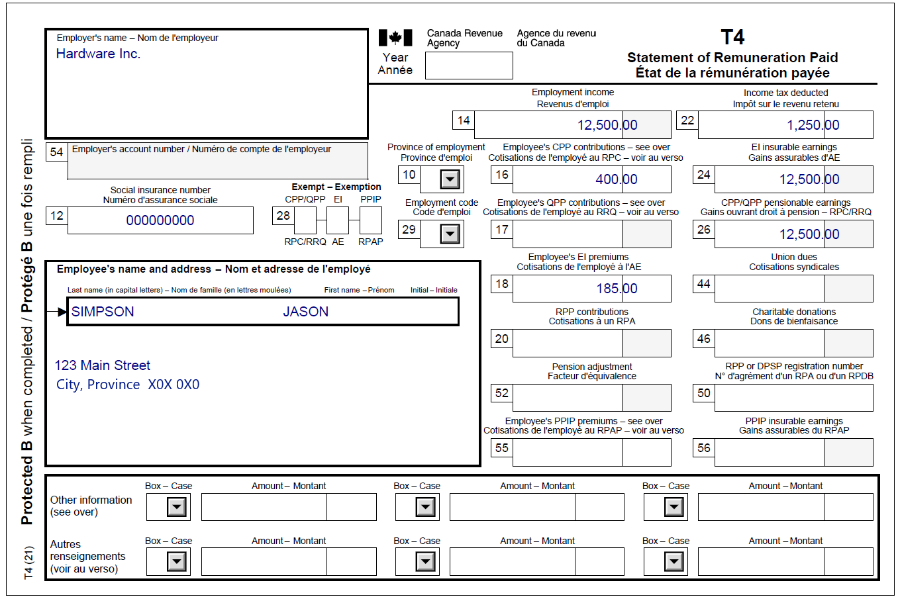
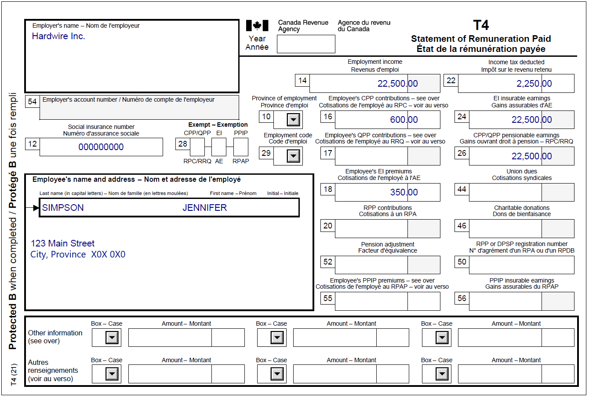

Incarcerated Individual with a spouse
Pre-test question
Sorry, that's incorrect.
An incarcerated individual becomes ineligible to receive GST/HST credit when they have been confined to a prison or similar institution for a period of 90 consecutive days or more that includes the first day of the quarterly payment month (July, October, January, April).
That's correct
An incarcerated individual becomes ineligible to receive GST/HST credit when they have been confined to a prison or similar institution for a period of 90 consecutive days or more that includes the first day of the quarterly payment month (July, October, January, April).
Instructions
- Open the tax software
- Review the Background information and Required slips (tax slips, receipts, etc.)
- Provide all required information for the appropriate sections of the tax software
- Once completed, compare your results with the solution provided
- Afterwards, refer to the Takeaway points
Background information
Situation
Jason was incarcerated on June 4, 2022, and is not scheduled for release before January 2028. Jason needs to submit his tax return so his spouse, Jennifer, can continue receiving her GST/HST credit. Before Jason’s incarceration, he was employed by Hardware Inc. and Jennifer is currently employed by Hardwire Inc.
Identification information
| Name | Jason Simpson |
|---|---|
| Social insurance number (SIN) | 000 000 000 |
| Address | 123 Main Street City, Province X0X 0X0 |
| Date of birth (DOB) | April 22, 1977 |
| Marital status |
Married to: Jennifer Simpson on December 1, 2012 SIN: 000 000 000 DOB: May 22, 1977 |
Required slips
T4 - Statement of Remuneration Paid (Hardware Inc.) (for Jason)
Text version of the T4 slip
T4 - Statement of Remuneration Paid
Protected B
Employer’s name: Hardware Inc.
Employee’s name and address:
Last name: Simpson
First name: Jason
123 Main Street
City, Province X0X 0X0
Box 12: Social insurance number: 000 000 000
Box 14: Employment income – line 10100: 12,500.00
Box 16: Employee’s CPP contributions – line 30800: 400.00
Box 18: Employee’s EI premiums – line 31200: 185.00
Box 22: Income tax deducted – line 43700: 1,250.00
Box 24: EI insurable earnings: 12,500.00
Box 26: CPP/QPP pensionable earnings: 12,500.00
T4 - Statement of Remuneration Paid (Hardware Inc.) (for Jennifer)
Text version of the T4 slip
T4 - Statement of Remuneration Paid
Protected B
Employer’s name: Hardwire Inc.
Employee’s name and address:
Last name: Simpson
First name: Jennifer
123 Main Street
City, Province X0X 0X0
Box 12: Social insurance number: 000 000 000
Box 14: Employment income – line 10100: 22,500.00
Box 16: Employee’s CPP contributions – line 30800: 600.00
Box 18: Employee’s EI premiums – line 31200: 350.00
Box 22: Income tax deducted – line 43700: 2,250.00
Box 24: EI insurable earnings: 22,500.00
Box 26: CPP/QPP pensionable earnings: 22,500.00
Review your results
Solutions will be available in February 2023 as printable PDF.
Takeaway points
Steps to follow
- Review their background information and required slips
- Complete the Spouse interview type by selecting Complete information (recommended) from the What information will you provide for your spouse? drop-down menu
- From Interview setup, tick the box next to Prison in 2022 in the Specific situations section and tick the box next to Employment income and employment insurance benefits (T4, T4E/RL-6) in the Employment and other benefits section
- Click Prison in 2022 in the left-side menu and select In prison on December 31, 2022 for more than 6 months from the Indicate if you were in prison for 90 days or more in 2022 drop-down menu
- Click T4 and employment income in the left-side menu, then click the + sign next to T4 income (earned in any province except Quebec) to enter the information from Jason’s T4 slip
- Repeat previous step for Jennifer
Although you are only transmitting Jason’s tax return, complete information for Jennifer should be provided when preparing his tax return. This allows the software to calculate the benefits and credits that Jason is eligible for during his incarceration.
Jason is not eligible for the Canada workers benefit (CWB) or the GST/HST credit because he was incarcerated for more than 90 consecutive days. However, submitting his tax return ensures Jennifer is able to keep receiving the full benefits and credits she is eligible for.
Although Jennifer is still eligible to receive the CWB and GST/HST credit for herself, she does not receive any CWB or GST/HST credits for Jason due to his incarceration.
For more information refer to UFile instructions.